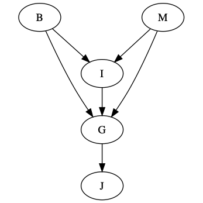
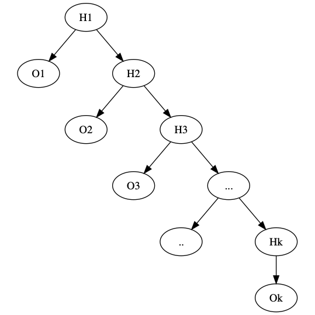
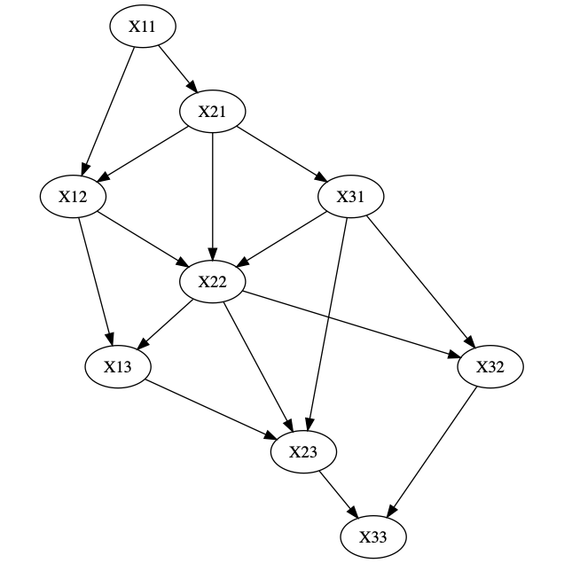

Bayesian Inference
Homework
Have:
$$ (P(J \mid G) = P(J \mid G, I)) \implies G \dbot I \mid G \\ (P(M \mid G, B, I) = P(M, G, B, I, J)) \implies M \dbot J \mid G, B, I $$
Some expansions:
$$ \begin{aligned} P(b, i, \lnot m, g, j) &= P(b) P(\lnot m) P(i \mid b, \lnot m) P(g \mid b, i, \lnot m) P(j \mid g) \\ P(j \mid b, i, m) &= \frac{P(j, b, i, m)}{P(b, i, m)} \end{aligned} $$
The total expansion:
$$ P(j, b, i, m) &= \sum_g P(g, j, b, i, m) \\ &= \sum_g P(b) P(b) P(i \mid b, m) P(g, b, i, m) P(j, g) \\ &= P(b) P(m) P(i \mid b, m) \sum_g P(g \mid b, i, m) P(j, g) \\ &= P(b) P(m) P(i \mid b, m) h_1(b, i, m, j) \\ P(b, i, m) &= \sum_j \sum_g P(j, g, b, i, m) \\ &= \sum_j \sum_g P(b) P(m) P(i \mid b, m) P(g \mid b, i, m) P(j \mid g) \\ &= \sum_g P(b) P(m) P(i \mid b, m) P(g \mid b, i, m) (\sum_j P(j \mid g) = 1) \\ &= P(b) P(m) P(i \mid b, m) (\sum_g P(g \mid b, i, m) = 1) \\ &= h_1(b, i, m, j) $$
What is the time complexity of this variable elimination process? We can predict this via looking at the graph.
Consider
$$ P(j) &= \sum_b \sum_i \sum_m \sum_j P(b) P(m) P(i \mid b, m) P(g \mid b, i, m) P(j \midg) \\ &= \sum_b \sum_m \sum_j P(b) P(m) P(j \midg) (h_1(b, m, g) := \sum_i P(g \mid b, i, m) P(i \mid b, m)) \\ $$
Then, we need to compute \(h_1(b, m, g)\) for all values of \(b, m, g\), and inside, \(i\). This is \(|I| \cdot |B| \cdot |M| \cdot |G|\). Graphically,

This is the "moral graph", where nodes that appear in the same probability expression are connected. For example, B and M are connected since we have \(P(i \mid b, m)\) in \(P(j)\) (above).
If each variable has \(d\) possible values, then \(h(x_i, \dots, x_w)\) runs in \(O(d^{w+1})\), and we need to do this \(n\) times where \(n\) is the number of such \(h\) functions we expand to, taking a total of \(O(n d^{w+1})\) time. The process of these \(h\)'s eliminating variables is demonstrated graphically:
\(\downarrow\)
\(\downarrow\)
Each graph has a maximum clique size. This is the number of \(h\)'s we'll need to emilinate the graph's varaibles.
Hidden Markov Model (HMM)
We setup a Bayesian Network like
Example Good
Where the \(H_i\) are the hidden states, and the \(O_i\) are the observations. We want to find:
$$ P(H_1, \dots, H_k \mid O_1, \dots, O_k) $$
How long does is take to calculate this? The maximum clique size is 2, so it will take \(2 d^{w+1}\).
Example Bad
This one actually has a nice path \(X_{21} \rightarrow X_{12} \rightarrow X_{13} \rightarrow X_{23} \rightarrow X_{32} \rightarrow X_{31} \rightarrow X_{21}\).